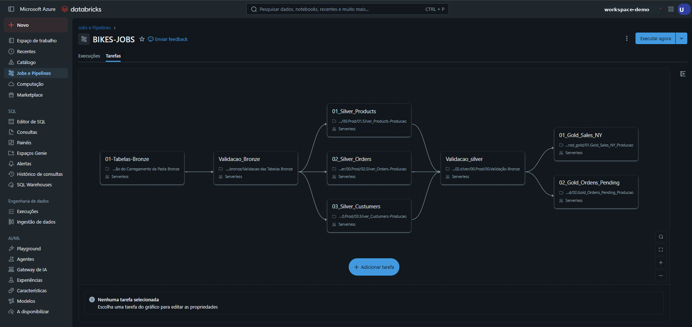

DATABRICKS
Projeto Bike Store Lakehouse: Engenharia de Dados com Azure e Databricks
Stack Tecnológica
- Cloud: Azure (Resource Groups, ADLS Gen2, Access Connector).
- Processamento: Apache Spark (PySpark e Spark SQL) no Azure Databricks.
- Armazenamento: Delta Lake (Transações ACID e Time Travel).
- Governança: Unity Catalog (Catálogos, Schemas e Volumes).
- Orquestração: Databricks Jobs (Workflows) e Azure Data Factory (ADF).
- BI: Power BI e Figma (Design de UI/UX).
